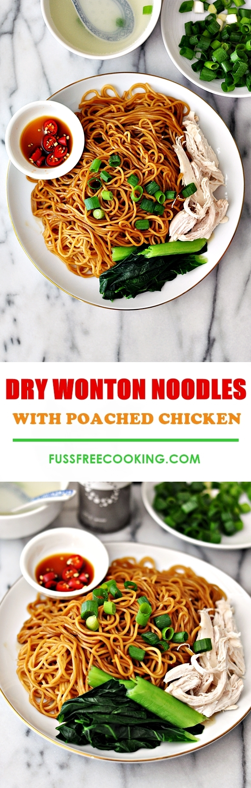

Instructions
Poached chicken & clear broth:
-
In a pot, add chicken breast fillets, ginger, 1 spring onion (knotted)
and boiling hot water. Cook over medium flame until the chicken breast
fillets are cooked through. Transfer the chicken breast onto a plate
and shred the chicken with two forks. Set aside and keep warm. Season
the clear chicken broth with salt and white pepper.
Garlic oil:
-
In a pan, add 1/8 cup of cooking oil and garlic. Fry the garlic over
low flame until it turns golden brown. Add sesame oil and set aside -
no need to drain the oil from the garlic.
Sauce for the noodles:
-
In each serving bowl, add 1 Tbsp soy sauce (or to taste), 1 1/2 Tbsp
kecap manis (or to taste), 1/2 Tbsp garlic oil, a dash of ground white
pepper.
Cook the noodles:
-
Fill a large pot with boiling water. When the water is boiling, add
noodles and cook according to packet instructions. When the noodles is
cooked to your desired texture, divide them in the prepared bowls. Mix
the noodles with sauce.
To serve:
-
Garnish the noodles with shredded poached chicken and thinly sliced
spring onion. Serve with the clear broth (garnish with garlic oil and
sliced spring onion). I also like to have the noodles with sliced
fresh chili in soy sauce. Enjoy!
